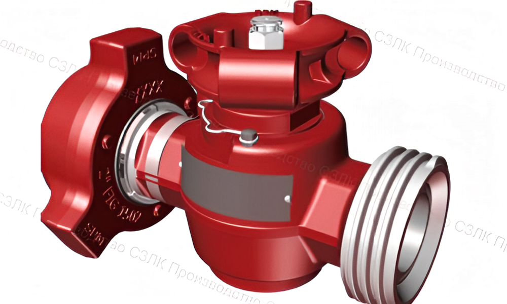

Детали для пятиплунжерного гидравлического насоса QWS-2500
Категория: Запасные части к насосному оборудованию гидроразрыва пласта
Комплектующие для насосов QWS-2500, применяемых в операциях гидроразрыва пласта. Все детали изготавливаются из высококачественных материалов с соблюдением всех технических требований и стандартов.
Доступные диаметры плунжеров
ДИАМЕТР ПЛУНЖЕРА 5"
| № | Наименование детали | Каталожный номер | УРАЛТЕХНОИМПЭКС |
|---|---|---|---|
| 1 | Коллектор в сборе | 2P100175 | \n |
| 2 | Корпус гидравлический\n | 1P102978 | УТИ.1P102978 |
| 3\n | Пружина верхняя\n | 4P100281 | УТИ.4P100281 |
| 4\n | Клапан\n | 2A109537PP | УТИ.2A109537PP |
| 5\n | Уплотнение клапана\n | 2P110356 | УТИ.2P110356 |
| 6\n | Седло\n | 2A109541 | УТИ.2A109541 |
| 7\n | Уплотнение крышки всасывающего клапана\n | P108291 | УТИ.1P108291 |
| 8\n | Крышка всасывающего клапана\n | 3P104373 | УТИ.3P104373 |
| 9\n | Гайка крышки клапана\n | 3P104372 | УТИ.3P104372 |
| 10\n | Гайка нагнетательного клапана напорная\n | 2P103069 | УТИ.2P103069 |
| 11\n | Упор всасывающего клапана\n | 38100176 | УТИ.38100176 |
| 12\n | Пружина нижняя\n | 4P100198 | УТИ.4P100198 |
| 13\n | Кольцо опорное\n | 3P103033 | - |
| 14\n | Кольцо головное\n | P100342HP | УТИ.1P100342HP |
| 15\n | Уплотнение жесткое\n | P100343HP | УТИ.1P100343HP |
| 16\n | Адаптер\n | P107533 | - |
| 17\n | Фонарное кольцо\n | 3P107530 | - |
| 18\n | Манжета маслосъёмная\n | P101833HP | - |
| 19\n | Гайка нажимная\n | 3P103037G | - |
| 20\n | Фланец напорный\n | 3A102713 | УТИ.3A102713 |
| 21\n | Уплотнение торцевое\n | 4P10229 | УТИ.4P10229 |
| 22\n | Плунжер\n | 2P103313 | УТИ.2P103313 |
| 23\n | Винт стяжной\n | 4P101714 | УТИ.4P101714 |
| 24\n | Уплотнение фланца напорного\n | 4109509 | УТИ.4109509 |
| 25\n | Уплотнение торцевое\n | 4P10229 | УТИ.4P10229 |
| 26\n | Кольцо уплотнительное\n | P103063 | - |
| 27\n | Кольцо упорное\n | P103064 | - |
| 28\n | Кольцо упорное\n | P103062 | - |
| 29\n | Кольцо уплотнительное\n | P103061 | - |
| 30\n | Шпилька\n | P14896 | УТИ.1P14896 |
| 31\n | Гайка\n | P14897 | УТИ.1P14897 |
| 32\n | Уплотнение крышки нагнетательного клапана\n | P108291 | УТИ.1P108291 |
| 33\n | Крышка нагнетательного клапана\n | - | - |
Примечание: Детали, не имеющие каталожного номера УралТехноИмпэкс, предприятие предварительно не изготавливает. Тем не менее, вы можете уточнить этот вопрос в информационной службе, возможны варианты.
ДИАМЕТР ПЛУНЖЕРА 4,5"
| № | Наименование детали | Каталожный номер | УРАЛТЕХНОИМПЭКС |
|---|---|---|---|
| 1 | Коллектор в сборе | 2P100175 | - |
| 2 | Корпус гидравлический | 1P102978 | УТИ.1P102978 |
| 3 | Пружина верхняя | 4P100281 | УТИ.4P100281 |
| 4 | Клапан | 2A109537PP | УТИ.2A109537PP |
| 5 | Уплотнение клапана | 2P110356 | УТИ.2P110356 |
| 6 | Седло | 2A109541 | УТИ.2A109541 |
| 7 | Уплотнение крышки всасывающего клапана | P108291 | УТИ.1P108291 |
| 8 | Крышка всасывающего клапана | 3P104373 | УТИ.3P104373 |
| 9 | Гайка крышки клапана | 3P104372 | УТИ.3P104372 |
| 10 | Гайка нагнетательного клапана напорная | 2P103069 | УТИ.2P103069 |
| 11 | Упор всасывающего клапана | 38100176 | УТИ.38100176 |
| 12 | Пружина нижняя | 4P100198 | УТИ.4P100198 |
| 13 | Кольцо опорное | 3P103033 | - |
| 14 | Кольцо головное | P100342HP | УТИ.1P100342HP |
| 15 | Уплотнение жесткое | P100343HP | УТИ.1P100343HP |
| 16 | Адаптер | P107533 | - |
| 17 | Фонарное кольцо | 3P107530 | - |
| 18 | Манжета маслосъёмная | P101833HP | - |
| 19 | Гайка нажимная | 3P103037G | - |
| 20 | Фланец напорный | 3A102713 | УТИ.3A102713 |
| 21 | Уплотнение торцевое | 4P10229 | УТИ.4P10229 |
| 22 | Плунжер | 2P103313 | УТИ.2P103313 |
| 23 | Винт стяжной | 4P101714 | УТИ.4P101714 |
| 24 | Уплотнение фланца напорного | 4109509 | УТИ.4109509 |
| 25 | Уплотнение торцевое | 4P10229 | УТИ.4P10229 |
| 26 | Кольцо уплотнительное | P103063 | - | 27 | Кольцо упорное | P103064 | - |
| 28 | Кольцо упорное | P103062 | - |
| 29 | Кольцо уплотнительное | P103061 | - |
| 30 | Шпилька | P14896 | УТИ.1P14896 |
| 31 | Гайка | P14897 | УТИ.1P14897 |
| 32 | Уплотнение крышки нагнетательного клапана | P108291 | УТИ.1P108291 |
| 33 | Крышка нагнетательного клапана | - | - |
Примечание: Детали, не имеющие каталожного номера УралТехноИмпэкс, предприятие предварительно не изготавливает. Тем не менее, вы можете уточнить этот вопрос в информационной службе, возможны варианты.
ДИАМЕТР ПЛУНЖЕРА 4"
| № | Наименование детали | Каталожный номер | УРАЛТЕХНОИМПЭКС |
|---|---|---|---|
| 1 | Коллектор в сборе | 2P100175 | - |
| 2 | Корпус гидравлический | 1P102978 | УТИ.1P102978 |
| 3 | Пружина верхняя | 4P100281 | УТИ.4P100281 |
| 4 | Клапан | 2A109537PP | УТИ.2A109537PP |
| 5 | Уплотнение клапана | 2P110356 | УТИ.2P110356 |
| 6 | Седло | 2A109541 | УТИ.2A109541 |
| 7 | Уплотнение крышки всасывающего клапана | P108291 | УТИ.1P108291 |
| 8 | Крышка всасывающего клапана | 3P104373 | УТИ.3P104373 |
| 9 | Гайка крышки клапана | 3P104372 | УТИ.3P104372 |
| 10 | Гайка нагнетательного клапана напорная | 2P103069 | УТИ.2P103069 |
| 11 | Упор всасывающего клапана | 38100176 | УТИ.38100176 |
| 12 | Пружина нижняя | 4P100198 | УТИ.4P100198 |
| 13 | Кольцо опорное | 3P103033 | - |
| 14 | Кольцо головное | P100342HP | УТИ.1P100342HP |
| 15 | Уплотнение жесткое | P100343HP | УТИ.1P100343HP |
| 16 | Адаптер | P107533 | - |
| 17 | Фонарное кольцо | 3P107530 | - |
| 18 | Манжета маслосъёмная | P101833HP | - |
| 19 | Гайка нажимная | 3P103037G | - |
| 20 | Фланец напорный | 3A102713 | УТИ.3A102713 |
| 21 | Уплотнение торцевое | 4P10229 | УТИ.4P10229 |
| 22 | Плунжер | 2P103313 | УТИ.2P103313 |
| 23 | Винт стяжной | 4P101714 | УТИ.4P101714 |
| 24 | Уплотнение фланца напорного | 4109509 | УТИ.4109509 |
| 25 | Уплотнение торцевое | 4P10229 | УТИ.4P10229 |
| 26 | Кольцо уплотнительное | P103063 | - |
| 27 | Кольцо упорное | P103064 | - |
| 28 | Кольцо упорное | P103062 | - |
| 29 | Кольцо уплотнительное | P103061 | - |
| 30 | Шпилька | P14896 | УТИ.1P14896 |
| 31 | Гайка | P14897 | УТИ.1P14897 |
| 32 | Уплотнение крышки нагнетательного клапана | P108291 | УТИ.1P108291 |
| 33 | Крышка нагнетательного клапана | - | - |
Примечание: Детали, не имеющие каталожного номера УралТехноИмпэкс, предприятие предварительно не изготавливает. Тем не менее, вы можете уточнить этот вопрос в информационной службе, возможны варианты.